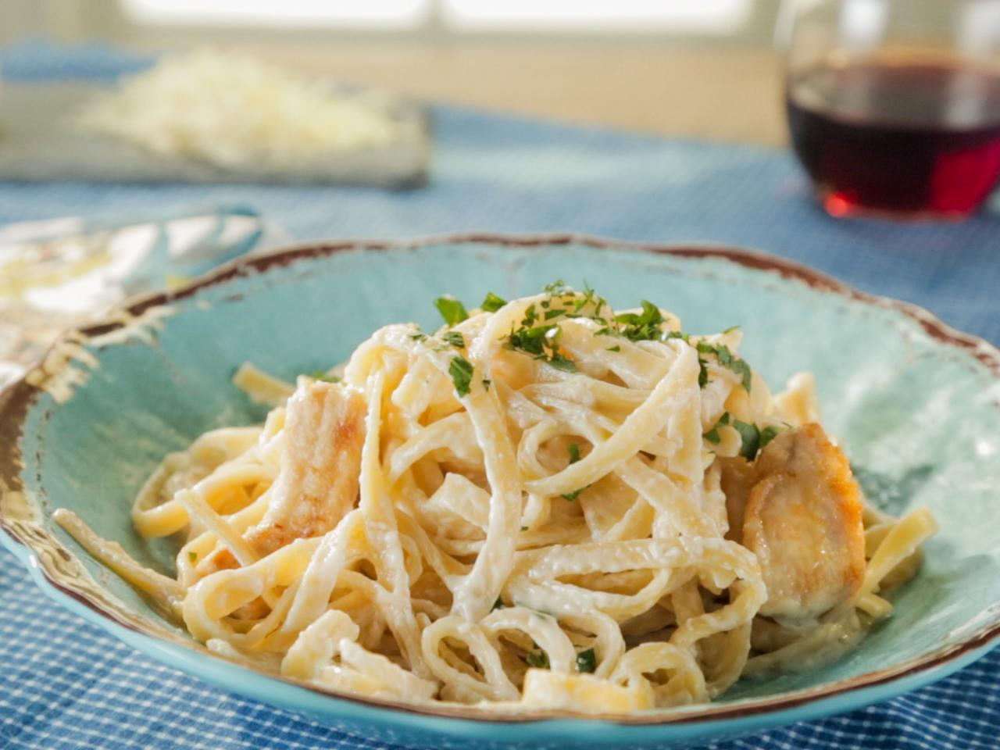

The Best Chicken Fettuccine Alfredo

Description
If you’re one to overlook chicken fettuccine alfredo, it may be because you haven’t enjoyed it from scratch. Good news – this addictive, simple pasta dish only takes 45 minutes from start to finish, WITH a rich, homemade sauce and seared, golden-brown, and juicy chicken.
It’s a cheesy, creamy family favorite with a deep restaurant-style flavor reminiscent of Olive Garden chicken fettuccine Alfredo, thanks to the double dose of garlic. We always make this when we have a crowd coming over because of how easy to make yet elegant it is, and even when we two-time this recipe, there is never a drop left.
Ingredients
- 12 ounces fettuccine pasta
- Minced flat leaf parsley, for serving
For the chicken:
- 1 pound boneless, skinless chicken breasts
- 1 teaspoon Italian seasoning
- 1 teaspoon kosher salt
- 1/4 teaspoon freshly cracked black pepper
- 1 tablespoon extra-virgin olive oil
- 2 tablespoons unsalted butter
For the sauce:
- 1/2 cup unsalted butter, cut into 8 pieces
- 2 garlic cloves, minced
- 3/4 teaspoon garlic powder
- 1/4 teaspoon ground nutmeg
- 1/2 teaspoon kosher salt
- 1/4 teaspoon freshly cracked black pepper, plus more for serving
- 1.5 cups heavy whipping cream, room temperature
- 5 ounces freshly grated Parmesan cheese
Steps
- Bring a large pot of salted water to a boil. Add the pasta and cook until al dente according to package directions. Drain and set aside.
- Meanwhile, make the chicken. Season the chicken all over with Italian seasoning, salt, and pepper.
- Heat the olive oil in a large nonstick skillet over medium-high heat. Once the oil is glistening, add the chicken and cook, undisturbed, until browned, 4 to 6 minutes per side. Add the butter to the pan and cook, turning occasionally, until the internal temperature of the chicken reaches 165°F on an instant-read thermometer, about 16 minutes. Remove the pan from the heat.
- Transfer the chicken to a cutting board and let rest for 3 minutes. Cut into 1/2 inch-thick slices and tent with foil to keep warm.
- Make the Alfredo sauce. Wipe out the skillet and return it to medium heat. Add the butter. When the butter is nearly melted, add the garlic, garlic powder, nutmeg, salt, and pepper. Cook, stirring, until fragrant, about 1 minute.
- Increase the heat to medium-high and gradually stir in the heavy cream. Bring to a simmer, then add the parmesan; cook, stirring, until fully incorporated, about 2 minutes. Reduce the heat to medium low and cook, stirring, until thickened, about 5 minutes more. Add the pasta and toss to coat.
- Divide the pasta between bowls and top with the sliced chicken. Sprinkle with parsley and season with pepper to taste.